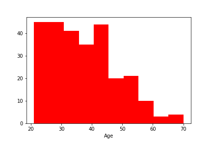
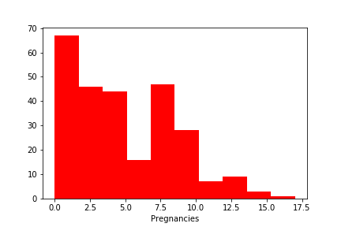
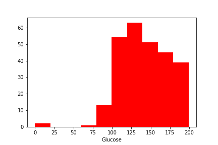
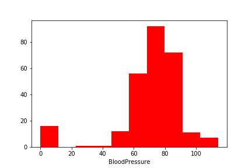
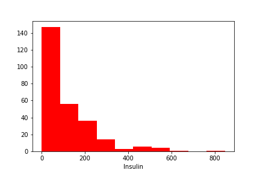
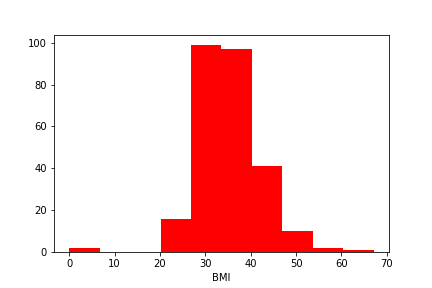
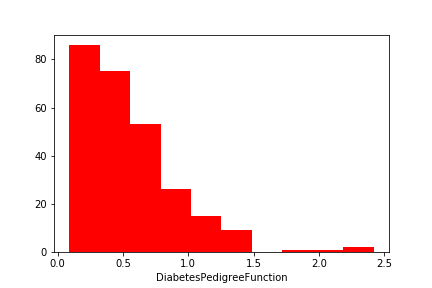
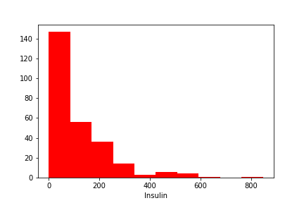
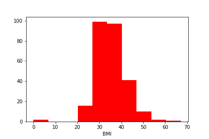
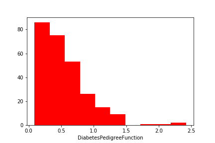

Analysis of Diabetes Mellitus
Abstract
The population for this study was the Pima Indian population near Phoenix, Arizona. That population has been under continuous study since 1965 by the National Institute of Diabetes and Digestive and Kidney Diseases because of its high incidence rate of diabetes.Each community resident over 5 years of age was asked to undergo a standardized examination every two years, which included an oral glucose tolerance test. Diabetes was diagnosed according to World Health Organization Criteria; that is, if the 2 hour post-load plasma glucose was at least 200 mg/dl (11.1 mmol/l) at any survey examination or if the Indian Health Service Hospital serving the community found a glucose concentration of at least 200 mg/dl during the course of routine medical care. In addition to being a familiar database to the investigators, this data set provided a well validated data resource in which to explore prediction of the date of onset of diabetes in a longitudinal manner.
Dataset Attributes
The following are the attributes of the dataset
- Pregnancies: Number of times pregnant
- Glucose: Plasma glucose concentration a 2 hours in an oral glucose tolerance test
- BloodPressure: Diastolic blood pressure (mm Hg)
- SkinThickness: Triceps skin fold thickness (mm)
- Insulin: 2-Hour serum insulin (mu U/ml)
- BMI: Body mass index (weight in kg/(height in m)^2)
- DiabetesPedigreeFunction: Diabetes pedigree function
- Age:Age (years)
- Outcome:Class variable (0 or 1)
Sample Data
The below table shows a sample of data columns and rows
| Pregnancies | Glucose | BloodPressure | SkinThickness | Insulin | BMI | DiabetesPedigreeFunction | Age | Outcome |
|---|---|---|---|---|---|---|---|---|
| 1 | 85 | 66 | 29 | 0 | 26.6 | 0.35100000000000003 | 31 | 0 |
| 8 | 183 | 64 | 0 | 0 | 23.3 | 0.672 | 32 | 1 |
| 1 | 89 | 66 | 23 | 94 | 28.1 | 0.16699999999999998 | 21 | 0 |
| 0 | 137 | 40 | 35 | 168 | 43.1 | 2.2880000000000003 | 33 | 1 |
Distribution of Variables
By Frequency
Positive Outcomes
    




